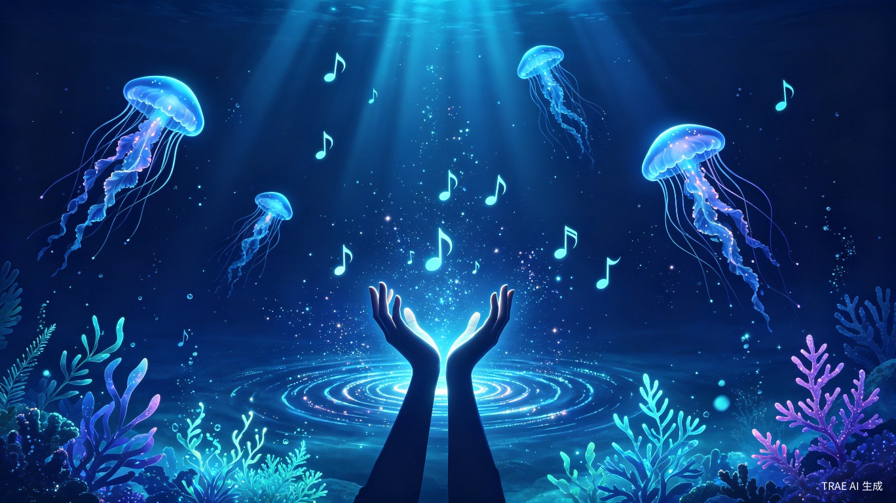
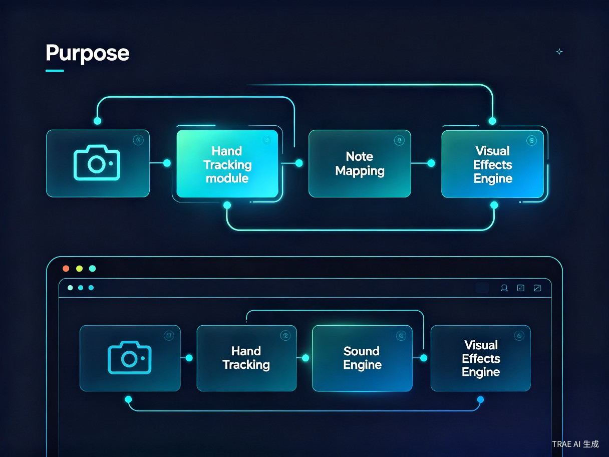
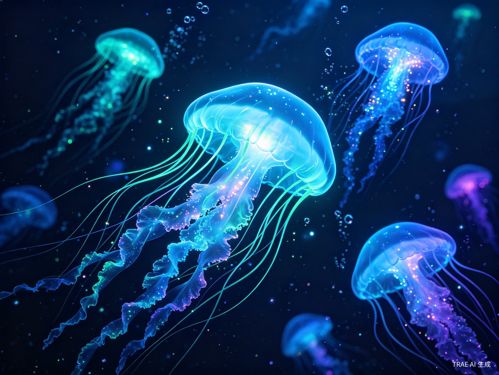

隔空弹奏的魔法钢琴 — 融合手势追踪、实时合成音色与深海生物发光特效的沉浸式 Web 交互体验
灵感来源与核心定位
交互流程与视觉语言
技术选型与系统设计
水母、海藻与粒子系统
指尖追踪与点按检测
开发计划与迭代方向
想象一下：你举起双手，指尖划过空气，音符从虚空中浮现，蓝色水母随旋律翩翩起舞，发光海藻在海底轻轻摇曳 — 这就是空气魔琴。
空气魔琴的创意源自三个核心意象的融合：特雷门琴（Theremin）的隔空演奏理念、深海生物发光（Bioluminescence）的视觉震撼力，以及音乐可视化（Music Visualization）的即时反馈体验。我们希望创造一个让用户无需任何物理接触，仅凭手势就能"演奏"出视觉与听觉双重盛宴的 Web 应用。
空气魔琴不是一个游戏，而是一个沉浸式艺术装置。它将用户的身体变为乐器，将屏幕变为深海画布。每一次指尖的点按，都是一次微型魔法 — 音符炸开成光粒，水母受惊加速游动，气泡从琴键位置升起，整个画面随演奏者的动作而"活"起来。
整个体验分为三个阶段，力求从第一秒就建立"魔法感"：
用户打开页面，映入眼帘的是深海主题的开始界面。背景中水母缓缓漂浮、海藻轻轻摇曳，营造沉浸氛围。中央是发光的"开启摄像头开始"按钮，配合一句诗意的引导文案。
点击按钮后，摄像头启动，画面以半透明方式融入深海背景。用户看到自己的手被青色光标追踪，开始自然地移动手指探索琴键区域。系统通过 3 帧移动平均平滑算法消除抖动，让光标跟手流畅。
用户将手指移到琴键上方，做向下点按动作 — 音符响起，琴键亮起蓝色光芒，粒子从琴键位置炸开，附近水母受惊加速游动，气泡上升，整个画面随演奏"活"起来。
整体视觉风格定位为深海生物发光（Deep-Sea Bioluminescence），核心设计原则如下：
以深海蓝 (#020814) 为底色，青色 (#00e5ff) 为主色调，蓝紫 (#7b5fff) 为辅助色。所有发光元素均采用同色系渐变，避免杂色干扰。
所有交互元素都带有柔和的辉光效果（Glow），通过 Canvas shadowBlur 和径向渐变实现。光晕扩散而非锐利边缘，模拟水中光的散射。
海藻随水流摆动、水母脉动游动、气泡蜿蜒上升 — 所有元素都处于持续的运动状态中，让画面"永远活着"。
摄像头画面以 20% 透明度镜像显示，用户能看到自己的手在画面中，但不会遮挡特效。人影与虚拟元素融为一体。
空气魔琴是一个纯前端单文件 HTML 应用，所有依赖通过 CDN 引入，无需后端服务。这种架构选择确保了部署的极简性 — 只需一个 HTML 文件即可在任何现代浏览器中运行。

| 模块 | 技术方案 | 版本 | 职责 |
|---|---|---|---|
| 手势追踪 | MediaPipe Hands | 0.4.1675 | 实时检测双手 21 个关键点，输出归一化坐标 |
| 摄像头 | getUserMedia API | 原生 | 获取前置摄像头视频流 |
| 音色合成 | Tone.js | 14.8.49 | 基于 Web Audio API 的多复音合成器 + 混响 + 延迟 |
| 视觉渲染 | Canvas 2D | 原生 | 绘制琴键、粒子、水母、海藻等所有视觉元素 |
| UI 框架 | Tailwind CSS | CDN | 快速构建界面布局与样式 |
系统以 requestAnimationFrame 驱动的主循环为核心，每帧执行以下流水线：
1. MediaPipe 回调 → 原始指尖坐标（归一化 0~1）
2. 坐标映射 → 镜像翻转 + 画布像素坐标
3. 3 帧移动平均 → 平滑后的指尖位置
4. 点按检测 → 对比当前帧 vs 上一帧 Y 轴速度
5. 音符触发 → Tone.js 播放 + 粒子生成 + 水母响应
6. Canvas 绘制 → 背景 → 海藻 → 水母 → 气泡 → 琴键 → 粒子 → 光标
音色链路为 PolySynth → FeedbackDelay → Reverb → Destination。振荡器采用正弦波（Sine），包络设置为快速起音（0.05s）、中等衰减（0.4s）、较长释放（2s），营造出空灵、悠远的深海钢琴质感。延迟效果添加八分音符回声，混响空间感设置为 3 秒衰减。
视觉特效是空气魔琴的"灵魂"。我们构建了一套多层次的粒子与生物模拟系统，让每一次演奏都变成一场微型深海灯光秀。

水母是整个场景中最具标志性的元素。每只水母由三个部分组成：
sin(phase) 驱动脉动，模拟水母的游动收缩。水母不是简单的循环动画，而是具有物理行为的自主实体：
海藻分布在屏幕底部，数量根据屏幕宽度动态计算（约每 60px 一株）。每株海藻由 8 个分段组成，每个分段的水平偏移量由 sin(time * speed + phase + segment * 0.5) 决定，偏移幅度随高度递增（t²），模拟真实海藻"根部固定、尖端自由"的摆动特征。
海藻颜色在 HSL 色相 160°~220° 之间随机分布（绿-青-蓝），亮度 30%~50%，透明度 0.4。尖端绘制一个 3px 的发光圆点，作为"生物发光"的视觉锚点。
音符触发时生成两种类型的粒子：
25 个粒子从触发点向四周均匀扩散，每个粒子带有随机偏移角度。受微弱重力影响（0.08/帧），速度衰减系数 0.95。尺寸随生命周期线性缩小，配合 shadowBlur: 15 产生发光效果。
8 个粒子从触发点向下飘落，模拟水母触手断裂的碎片。受正弦横向力影响（sin(y * 0.05) * 0.1），产生蛇形运动轨迹。绘制时连接当前位置与 3 帧前的位置，形成拖尾线条。
每次音符触发同时生成 5 个气泡，从琴键位置向上飘升。气泡具有以下特性：
sin(y * 0.03 + wobble) * 0.5），路径蜿蜒音符触发时在琴键中心生成一个径向渐变光晕，半径从 0 逐渐扩展至琴键尺寸，透明度从 0.9 线性衰减至 0。使用三层 addColorStop（中心亮色 → 30% 半透明 → 完全透明）实现柔和的光散射效果。
手势识别的准确性是整个体验的基石。我们针对"隔空弹琴"这一特定场景，设计了一套多层次的优化策略。
MediaPipe Hands 为每只手输出 21 个关键点。我们选取全部 5 个指尖（拇指 tip=4、食指 tip=8、中指 tip=12、无名指 tip=16、小指 tip=20）作为追踪目标。相比仅追踪食指和中指，5 指追踪带来两个优势：
MediaPipe 的原始输出存在帧间抖动（jitter），直接使用会导致光标"跳动"。我们采用3 帧移动平均（Moving Average）进行平滑：
// 保留最近 3 帧的指尖坐标
handHistory.push(rawPositions);
if (handHistory.length > 3) handHistory.shift();
// 对每个手指，计算 3 帧坐标的均值
smoothed = {
x: (frame1.x + frame2.x + frame3.x) / count,
y: (frame1.y + frame2.y + frame3.y) / count
};
3 帧窗口在平滑度和响应延迟之间取得平衡 — 约 50ms 的延迟对于演奏体验来说几乎不可感知。
"点按"是空气魔琴的核心交互手势。检测逻辑基于Y 轴速度阈值：
当前帧指尖 Y 坐标处于琴键区域内（key.y ~ key.y + key.h），且当前帧与上一帧的 Y 差值 > 8px（向下运动），且距上次触发 > 180ms（防抖）。
每个手指维护独立的 tapState 对象，记录上次触发时间戳。使用 handId_fingerId 作为唯一键，避免不同手指互相干扰。
| 参数 | 默认值 | 优化值 | 原因 |
|---|---|---|---|
| maxNumHands | 2 | 2 | 支持双手演奏 |
| modelComplexity | 1 | 1 | 平衡精度与性能 |
| minDetectionConfidence | 0.5 | 0.6 | 提高检测门槛，减少误检 |
| minTrackingConfidence | 0.5 | 0.6 | 提高追踪稳定性 |
| 功能模块 | 状态 | 说明 |
|---|---|---|
| 摄像头调用 | 已完成 | getUserMedia 前置摄像头，镜像半透明背景 |
| 手势追踪 | 已完成 | 5 指尖追踪 + 3 帧平滑 + 速度点按检测 |
| 虚拟琴键 | 已完成 | 8 键（C4-C5），响应式布局，悬停/按下发光 |
| 音色合成 | 已完成 | Tone.js PolySynth + Reverb + Delay |
| 水母系统 | 已完成 | 5 只自主水母，脉动 + 触手 + 音符响应 |
| 海藻系统 | 已完成 | 动态数量，正弦摆动，发光尖端 |
| 粒子特效 | 已完成 | 闪光粒子 + 触手拖尾 + 光晕 + 气泡 |
| 深海背景 | 已完成 | 渐变 + 光束 + 网格 |
支持两个八度（C3-C5），增加黑键，提供多种音色切换（钢琴、竖琴、合成 Pad、水晶音色）。增加音阶选择器 UI。
录制用户的演奏序列（音符 + 时间戳），支持回放。增加"自由模式"和"示范模式"切换。
通过 WebRTC 实现多人同时演奏，每位演奏者的指尖用不同颜色标识，水母可以被多人共同"驱赶"。
接入简单 Markov Chain 或 Transformer 模型，根据用户演奏的音符序列自动生成和声伴奏，让"独奏"变成"合奏"。
支持将画面投影到实体墙面或桌面，配合深度摄像头实现真正的 3D 空间演奏，水母和海藻"游出"屏幕。